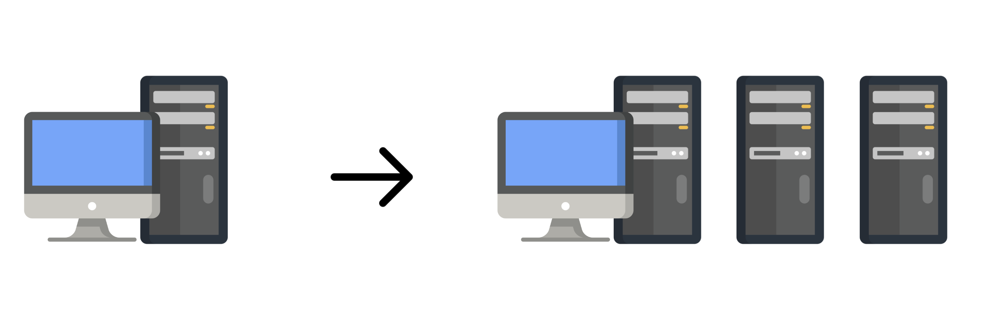

Scalability
Scalability in system design refers to the ability of a system to handle increasing amounts of work or growing demands by adding resources to the system. Here’s some content on scalability:
Scalability in System Design
Scalability is a crucial aspect of designing robust and efficient systems that can handle growth and increasing demands without compromising performance or reliability. It ensures that as the user base, data volume, or workload increases, the system can seamlessly adapt and continue to operate efficiently. There are two primary types of scalability: vertical and horizontal.
Vertical Scalability
Also known as scaling up, involves increasing the capacity of a single server or node. This typically means adding more resources such as CPU, RAM, or storage to handle increased load. Vertical scaling is often limited by the maximum capacity of hardware components and can become expensive.

Vertical scaling reaches a point where it's no longer feasible to continue increasing resources like CPU, RAM, or storage on a single server.
Horizontal Scalability
Also known as scaling out, involves adding more nodes to distribute the load across multiple machines or servers. This approach allows systems to handle increased traffic by adding more instances of servers rather than increasing the capacity of individual servers. Horizontal scaling provides better fault tolerance and can be more cost-effective in the long run.
Key Considerations for Scalability
- Stateless Architecture: Designing stateless components where possible allows for easier horizontal scaling because any instance of the service can handle any request without relying on session data from previous requests.
- Load Balancing: Implementing load balancers distributes incoming requests across multiple servers or instances, ensuring that no single server is overwhelmed and improving overall system performance.
- Database Scaling: Choosing the right database architecture (e.g., sharding, replication) and scaling strategy (vertical or horizontal) is critical to handling growing data volumes and ensuring efficient data access.
- Caching: Utilizing caching mechanisms (e.g., in-memory caches like Redis, CDN caching) helps reduce the load on backend servers by serving frequently accessed data quickly and locally.
- Microservices Architecture: Decomposing applications into smaller, independent services allows for easier horizontal scaling of individual services based on specific demands, rather than scaling the entire monolithic application.
- Monitoring and Auto-scaling: Implementing robust monitoring tools and auto-scaling policies ensures that resources are dynamically allocated based on real-time traffic and workload patterns, optimizing resource utilization and maintaining performance.
Benefits of Scalability
- Improved Performance: Scalable systems can maintain performance levels even under heavy load, ensuring responsiveness and reliability for users.
- Flexibility and Growth: Scalability allows businesses to grow and expand their user base without significant disruptions or the need for complete system overhauls.
- Cost Efficiency: Horizontal scaling, in particular, can be more cost-effective than vertical scaling because it utilizes commodity hardware and allows for incremental additions as needed.
In conclusion, scalability is not just about handling increased load but also about future-proofing systems to adapt to evolving demands and growth. By implementing scalable design principles and strategies, organizations can build resilient and efficient systems capable of meeting current and future challenges effectively.